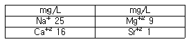
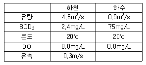
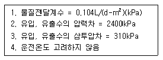
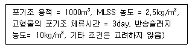
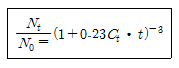

수질환경기사 (2008-07-27 기출문제)
1과목: 수질오염개론
1. 하천의 생태변화과정 중 ‘β-중부수성 수역’에 관한 설명과 가장 거리가 먼 것은? (단, Kolkwitz와 Marson의 4지대 구분 기준)
- 규조, 녹조 등 많은 종류의 조류가 출현한다.
- 태양충, 흡관충류가 출현한다.
- 고분자 화합물의 분해로 아미노산이 풍부해 진다.
- 수질도에 초록색으로 표시한다.
(정답률: 24%)

2. pH 7인 물에서 CO2의 해리상수는 4.3×10-7이고 [HCO3-] = 4.3×10-3몰/L 일 때 CO2 농도는?
- 0.1 mole/L
- 0.01 mole/L
- 0.001 mole/L
- 0.0001 mole/L
(정답률: 알수없음)
3. 어떤 하천수의 분석결과이다. 총경도(mg/L as CaCO3)는? (단, 원자량 : Ca 40, Mg 24, Na 23, Sr 88)

- 약 79
- 약 89
- 약 99
- 약 109
(정답률: 79%)
4. Glucose 500mg/L가 완전 산화하는데 필요한 이론적 산소 요구량은?
- 633mg/L
- 666mg/L
- 533mg/L
- 566mg/L
(정답률: 79%)
5. 최종 BOD가 150mg/L, 탈산소계수(자연대수를 base로 함)가 0.2day-1인 물의 5일 소모 BOD는?
- 약 85mg/L
- 약 95mg/L
- 약 1⑤mg/L
- 약 115mg/L
(정답률: 72%)
6. 적조(red tide)에 관한 설명으로 알맞지 않은 것은?
- 여름철, 갈수기로 인하여 염도가 증가된 정체해역에서 주로 발생한다.
- 고밀도로 존재하는 적조생물의 호흡에 의해 수중 용존산소를 소비하여 수중의 다른 생물의 생존이 어렵다.
- upwelling 현상이 원인이 되는 경우가 있다.
- 적조생물 중 독성을 갖는 편모조류가 치사성의 독소를 분비, 어패류를 폐사시킨다.
(정답률: 64%)
7. 용량이 6000m3인 수조에 400m3/hr의 유량이 유입된다면 수조 내 BOD 200mg/L가 20mg/L 될 때까지의 소요시간(hr)은? (단, 유입수 내 BOD = 0 이며 완전혼합형(희석효과만 고려함))
- 약 35
- 약 45
- 약 55
- 약 65
(정답률: 알수없음)
8. 어느 하천에 다음과 같은 하수가 유입될 때 혼합지점으로부터 5km 하류 지점에서의 용존산소농도는? (단, 혼합수의 K1과 K2(밑이 e)는 0.2/일과 0.3/일 이며 20℃에서의 포화산소농도는 9.2mg/L 이다.)

- 5.2mg/L
- 5.7mg/L
- 6.1mg/L
- 6.8mg/L
(정답률: 22%)
9. Ca(OH)2 농도가 100mg/L 인 용액의 pH는? (단, Ca(OH)2 는 완전 해리되며, Ca의 원자량은 40 이다.)
- 10.2
- 10.6
- 11.1
- 11.4
(정답률: 67%)
10. 0.02N 약산이 4% 해리되어 있다면 이 수용액의 pH는?
- 3.
- 3.4
- 3.7
- 3.9
(정답률: 50%)
11. 어떤 폐수의 BOD5가 300mg/L, COD가 450mg/L이었다. 이 폐수의 난분해성 COD(NBDCOD)는? (단, 탈산소계수 K1 = 0.01hr-1 이다. 상용대수 기준 BDCOD = BODu)
- 110mg/L
- 130mg/L
- 150mg/L
- 170mg/L
(정답률: 63%)
12. 어떤 하천수의 단위시간당 산소전달계수(KLa)를 측정코자 1L의 하천수 중 용존산소(DO) 농도를 측정하니 12mg/L였다. 이 때 용존산소의 농도를 완전히 제거하기 위하여 투입하는 Na2SO3의 이론적 농도는? (단, 원자량은 Na : 23)
- 약 63mg/L
- 약 74mg/L
- 약 84mg/L
- 약 95mg/L
(정답률: 42%)
13. 물 1L에 함유된 박테리아 22.6g의 이론적 COD 값은? (단, 박테리아(C5H7O2N)는 완전 산화되며 최종산물은 H2O, CO2, NH3 이다.)
- 약 17g/L
- 약 24g/L
- 약 29g/L
- 약 32g/L
(정답률: 57%)
14. 카드뮴에 대한 내용으로 틀린 것은?
- 카드뮴은 흰 은색이며 아연 정련업, 도금공업 등에서 배출된다.
- 칼슘대사 기능 장해로 골연화증이 유발된다.
- 만성폭로로 인한 흔한 증상은 단백뇨이다.
- 월슨씨병 증후군과 소인증이 유발된다.
(정답률: 64%)
15. 물에 대한 설명으로 틀린 것은?
- 비열은 1g의 물을 14.5℃~15.5℃까지 1℃ 올리는데 필요한 열량으로 물은 유사한 분자량을 갖는 다른 화합물보다 비열이 매우 큰 특성이 있다.
- 물은 광합성의 수소공여체이고 호흡의 최종산물이며 음파의 전파속도는 1482.9m/sec(20℃) 정도이다.
- 물의 표면장력이 크면 클수록 물의 흡수, 세정 능력이 커져 표면장력의 증가를 위한 인위적 증가제를 주입하기도 한다.
- 물의 동점도는 절대점도를 밀도로 나눈 값으로 cm2/sec 등의 단위로 나타내며 물 속에 있어서 물질의 확산, 분산능력을 나타내는 인자이다.
(정답률: 36%)
16. 미생물 중 ‘원생동물’에 관한 설명으로 틀린 것은?
- 다핵, 비운동성, 비광합성이며 세포벽이 뚜렷한 특징이 있다.
- 많은 원생동물은 녹조류가 진화과정에서 단지 엽록소를 상실함으로써 생긴 것으로 추측할 수 있다.
- 대게 호기성으로 크기가 100μm 이내의 것이 많으며 용해성 유기물 또는 세균 등을 섭취한다.
- 원생동물은 위족류, 편모충류, 섬모충류 등으로 나눌 수 있다.
(정답률: 19%)
17. 아세트산(CH3COOH) 3,000mg/L 용액의 pH가 3.0 이었다면 이 용액의 해리정수(Ka)는?
- 2×10-7
- 2×10-6
- 2×10-5
- 2×10-4
(정답률: 46%)
18. 어느 시료의 대장균 수가 5,000/mL 이라면 대장균 수가 5/mL 이 될 때까지 필요한 시간은? (단, 1차반응 기준, 대장균의 반감기는 1시간이다.)
- 약 10시간
- 약 15시간
- 약 20시간
- 약 25시간
(정답률: 55%)
19. 유량 400,000m3/day의 하천에 인구 20만명의 도시로부터 30000m3/day의 유량으로 하수가 유입되고 있다. 하수가 유입되기 전 하천의 BOD는 0.5mg/L이고, 유입 후 하천의 BOD를 2mg/L로 하기 위해서 하수처리장을 건설하려고 한다면 이 처리장의 BOD 제거효율은? (단, 인구 1인당 BOD 배출량은 40g/day라 한다.)
- 약 83%
- 약 87%
- 약 92%
- 약 96%
(정답률: 39%)
20. 생물학적 질산화에 관한 설명으로 틀린 것은?
- 미생물 성장의 에너지가 주로 암모니아와 같은 질소화합물의 산화에서 얻어진다.
- 생산되는 질산화 미생물의 증식량은 종속영양 미생물의 세포증식량에 비하여 수배 이상 크다.
- 질산화는 자가영양의 생물학적 과정이다.
- 종속영양미생물과는 달리, 질산화 미생물은 유기탄소 보다 탄산가스를 새로운 세포의 합성에 사용한다.
(정답률: 20%)
2과목: 상하수도계획
21. 원심력 펌프의 규정회전수 N = 20회/sec, 규정 토출량 Q = 0.8m3/sec, 규정 양정 15m 일 때, 펌프의 비교회전도는?
- 약 1⑤2
- 약 1091
- 약 1123
- 약 1176
(정답률: 38%)
22. 계획취수량을 확보하기 위하여 필요한 저수용량 결정에 사용되는 계획기준년은 원칙적으로 몇 개년에 제 1위 정도의 갈수를 표준으로 하는가?
- 15개년
- 10개년
- 7개년
- 5개년
(정답률: 73%)
23. 하수처리시설인 침사지에 관한 설명중 알맞지 않은 것은?
- 평균유속은 0.3m/sec를 표준으로 한다.
- 저부경사는 보통 1/100~2/100 로 한다.
- 합류식에서는 오수전용과 우수전용으로 구별하여 설치하는 것이 좋다.
- 체류시간은 5~10분을 표준으로 한다.
(정답률: 53%)
24. 하수 관거시설인 빗물받이의 설치에 관한 설명으로 틀린 것은?
- 협잡물 및 토사의 유입을 저감할 수 있는 방안을 고려하여야 한다.
- 설치위치는 보도, 차도 구분이 없는 경우에는 도로와 사유지의 경계에 설치한다.
- 도로 옆의 물이 모이기 쉬운 장소나 L형 측구의 유하 방향 하단부에 설치 한다.
- 우수침수방지를 위하여 횡단보도 및 가옥의 출입구 앞에 설치함을 원칙으로 한다.
(정답률: 58%)
25. 수도시설의 내진설계법과 가장 거리가 먼 것은?
- 진도법(수정진도법 포함)
- 다중회귀법
- 응답변위법
- 동적해석법
(정답률: 27%)
26. 하수의 배제방식 중 분류식에 대한 설명과 가장 거리가 먼 것은?
- 오수관거와 우수관거 2계통을 건설하는 경우는 비싸지만 오수관거만을 건설하는 경우는 건설비가 저렴하다.
- 관거 오접에 대한 철저한 감시가 필요하다.
- 오수관거에서는 소구경 관거에 의한 폐쇄의 우려가 있으나 청소는 비교적 용이하다.
- 오수와 우수관거 2계통을 동일도로에 매설하는 것이 용이하다.
(정답률: 54%)
27. 합류식에서 우천시 계획오수량은 원칙적으로 계획시간 최대오수량의 몇 배 이상으로 고려하여야 하는가?
- 1.5배
- 2.0배
- 2.5배
- 3.0배
(정답률: 60%)
28. 소규모 하수도 계획에 있어서 소규모 고유의 특성으로 틀린 것은?
- 일반적으로 건설비 및 유지관리비가 비싸게 되는 경향이 있다.
- 도시근교 및 관광지 일부의 마을을 제외하고는 급격한 사회적 변동이 생길 가능성이 작다.
- 하수도 운영에 있어서 지역주민과 밀접한 관련을 갖는다.
- 처리구역내 생활양식이 유사하고 유입하수의 수량 및 수질의 변동이 적다.
(정답률: 34%)
29. 펌프의 토출량이 1.0m3/sec, 토출구의 유속이 2m/sec로 할 때 펌프의 구경은?
- 약 200mm
- 약 400mm
- 약 600mm
- 약 800mm
(정답률: 42%)
30. 펌프의 수격현상(Water hammer)의 방지대책이 아닌 것은?
- 토출 측 관로에 표준형 조압수조(conventional surge tank)를 설치한다.
- 압력수조(air-chamber)를 설치한다.
- 토출 측 관로에 한방향형 조압수조(one-way surge tank)를 설치한다.
- 펌프에 플라이 휠을 분리하여 중량의 균형을 맞춘다.
(정답률: 17%)
31. 베인의 양력작용에 의하여 임펠러 내의 물에 압력 및 속도 에너지를 주고 더욱이 가이드 베인으로 속도에너지의 일부를 압력으로 변환하여 양수작용을 하는 상수도용 펌프는?
- 원심 펌프
- 벌류트 펌프
- 사류 펌프
- 축류 펌프
(정답률: 50%)
32. 수도관으로 사용되는 관종 중 스테인리스강관에 관한 특징으로 알맞지 않는 것은?
- 강인성이 뛰어나고 충격에 강하다.
- 용접접속에 시간이 걸린다.
- 라이닝이나 도장을 필요로 하지 않는다.
- 이종금속과의 절연처리가 필요 없다.
(정답률: 54%)
33. 하수 펌프장 시설인 스크루펌프(screw pump)의 일반적 장점이 아닌 것은?
- 양정에 제한이 없다.
- 회전수가 낮기 때문에 마모가 적다.
- 기동에 필요한 물채움장치나 밸브 등 부대시설이 없어 자동운전이 용이하다.
- 구조가 간단하고 개방형이어서 운전 및 보수가 쉽다.
(정답률: 17%)
34. 취수시설 중 취수탑에 관한 설명과 가장 거리가 먼 것은?
- 연간을 통하여 최소수심이 2m 이상으로 하천에 설치하는 경우에는 유심이 제방에 되도록 근접한 지점으로 한다.
- 취수탑의 횡단면은 환상으로서 원형 또는 타원형으로 한다.
- 취수탑의 상단 및 관리교의 하단은 하천, 호소 및 댐의 계획 최고 수위보다 높게 한다.
- 취수탑을 하천에 설치하는 경우에는 장축방향을 흐름방향과 직각이 되도록 설치한다.
(정답률: 37%)
35. 계획 우수량과 관련된 내용으로 틀린 것은?
- 최대계획우수유출량의 산정은 합리식에 의하는 것으로 한다.
- 확률년수는 원칙적으로 5~10년으로 한다.
- 유출계수는 총괄유출계수로부터 기초유출계수를 구하는 것을 원칙으로 한다.
- 유달시간은 유입시간과 유하시간을 합한 것으로서 유입시간은 최소단위배수구의 지표면 특성을 고려하여 구한다.
(정답률: 알수없음)
36. 상수도 시설인 배수관 관경 결정의 기초가 되는 수량은?
- 계획 1일 평균 배수량
- 계획 1일 최대 배수량
- 계획 시간 평균 배수량
- 계획 시간 최대 배수량
(정답률: 25%)
37. 하수관거시설인 오수받이에 대한 다음 설명 중 적절하지 않은 것은?
- 오수받이는 공공도로와 사유지 경계부근에 유지관리상 지장이 없는 장소에 설치한다.
- 오수받이의 상부에 인버터를 설치하며 저부에는 설치하지 않는다.
- 오수받이의 뚜껑은 견고하고 내구성 있는 재료로 만들어진 밀폐 뚜껑으로 한다.
- 오수받이의 규격은 내경 200~700mm, 깊이 700~1,000mm 정도로 한다.
(정답률: 20%)
38. 정수처리를 위한 급속여과지에 관한 설명으로 틀린 것은?
- 여과면적은 계획정수량을 여과속도로 나누어 구한다.
- 여과모래의 유효경이 0.45~0.7mm의 범위인 경우에 모래층의 두께는 60~70cm 범위로 한다.
- 1지의 여과면적은 300m2 이하로 한다.
- 여과속도는 120~150m/day를 표준으로 한다.
(정답률: 53%)
39. 하천, 수로, 철도 및 이설이 불가능한 지하매설물의 아래에 하수관을 통과시킬 경우 역사이펀 압력관으로 시공하는 부분을 역사이펀이라고 한다. 역사이펀(inverted-syphon)의 설계상 주의점에 관한 설명으로 틀린 것은?
- 시공 후의 점검 및 보수 등이 곤란하므로 특별히 부등침하가 되지 않도록 지반의 특성에 따라 적당한 기초공을 시공한다.
- 역사이펀실의 깊이가 5m 이상인 경우는 중간에 배수 펌프를 설치할 수 있는 설치대를 둔다.
- 관내 유속은 관내에 토사 침전이 없도록 하기 위해 상류측의 관거내 유속보다 50%이상 증가시킨다.
- 역사이펀 관거의 유입구와 유출구는 손실수도를 적게 하기 위하여 종모양으로 한다.
(정답률: 39%)
40. 하수도 시설기준에 의한 우수관거 및 합류관거의 최소관경 표준은?
- 200mm
- 250mm
- 300mm
- 350mm
(정답률: 42%)
3과목: 수질오염방지기술
41. 고도 수처리에 이용되는 정밀여과 분리막 방법에 관한 내용과 가장 거리가 먼 것은?
- 분리형태 : 용해, 확산
- 구동력 : 정수압차(0.1~1Bar)
- 막형태 : 대칭형 다공성막(Pore size 0.1~10μm)
- 적용분야 : 전자공업의 초순수 제조, 무균수 제조
(정답률: 54%)
42. 1일 10,000m3의 폐수를 급속혼화지에서 체류시간 100sec, 평균속도경사(G) 400sec-1인 기계식고속 교반장치를 설치하여 교반하고자 한다. 이 장치의 필요한 소요동력은? (단, 수온은 10℃이고, 점성계수(μ)는 1.307×10-3kg/mㆍs)
- 약 2210W
- 약 2340W
- 약 2420W
- 약 2560W
(정답률: 40%)
43. 하수고도처리를 위한 질소제거 방법 중 단일단계 질산화(부착 성장식)에 관한 설명으로 틀린 것은?
- BOD와 암모니아성 질소 동시제거 가능
- 미생물이 여재에 부착되어 있어 안정성은 이차침전과 무관
- 독성물질에 대한 질산화 저해 방지 가능
- 유출수의 암모니아 농도는 약 1~3mg/L 정도
(정답률: 알수없음)
44. 다음과 같은 조건에서 적당한 침사지의 유효길이는? (조건) 평균유속 0.3m/sec, 유효수심 1.0m, 유입량 1.0m3/sec, 수면적부하 1000m3/m2ㆍ day
- 14m
- 18m
- 21m
- 26m
(정답률: 10%)
45. 역삼투법으로 하루에 760m2의 3차 처리유출수를 탈염하기 위하여 요구되는 막의 면적(m2)은?

- 약 3200
- 약 3400
- 약 3500
- 약 3600
(정답률: 47%)
46. 활성슬러지 시설에서 1일 3,000kg(건조고형물기준)이 발생되는 폐슬러지를 호기성 소화처리하고자 할 때 소화조의 용적은? (단, 폐슬러지 농도는 3%, 수온이 20℃, 그리고 수리학적 체류시간은 20일이고, 비중은 1.03으로 한다.)
- 약 1515m3
- 약 1725m3
- 약 1945m3
- 약 2155m3
(정답률: 16%)
47. BOD 농도 160mg/L, SS농도 180mg/L, BOD-슬러지부하 0.3kgBOD/kgMLSSㆍday일 때, MLSS 농도는? (단, 폭기조 수리학적 체류시간은 3시간 이다.)
- 4267mg/L
- 4435mg/L
- 4682mg/L
- 4836mg/L
(정답률: 17%)
48. 유량 2000m3, 부유물질농도 220mg/L인 하수의 처리를 위한 최초침전지에서 생산되는 슬러지의 양은? (단, 슬러지 단위 중량(비중) 1.03, 함수율 94%, 최초 침전지 체류시간 2시간, 부유물질 제거효율 60% 기타 조건은 고려하지 않음)
- 2.3m3
- 3.3m3
- 4.3m3
- 5.3m3
(정답률: 35%)
49. 200mg/L Ethanol(C2H5OH)만을 함유한 50000m3/day의 공장폐수를 일반적 활성슬러지 공법으로 처리하려면 하루에 첨가하여야 하는 이론적인 질소량(kg)은? (단, Ethanol 은 미생물에 완전분해되고 독성이 없으며 이론적 BOD : N : P = 100:5:1)
- 824
- 1043
- 1252
- 1478
(정답률: 64%)
50. 냄새 혹은 생물학적 처리불능 (NBD)COD를 제거하기 위하여 흡착제로 활성탄(AC)을 사용하였는데 Freundlich 등온공식이 잘 적용되었다. 즉 COD가 56mg/L인 원수에 활성탄을 20mg/L 주입시켰더니 COD가 16mg/L 로 되었고, 52mg/L을 주입 시켰더니 COD가 4mg/L로 되었다. COD를 6mg/L로 만들기 위해서는 활성탄을 얼마나 주입시켜야 하는가?
- 34.3mg/L
- 37.6mg/L
- 40.8mg/L
- 46.1mg/L
(정답률: 20%)
51. 다음의 생물화학적 인 및 질소제거 공법중 인의 제거만을 주목적으로 개발된 공법은?
- Bardenpho
- A2/O
- UCT
- phostrip
(정답률: 45%)
52. 다음 조건하에서 대략적인 잉여 활성 슬러지 생산량(m3/일)은?

- 약 63
- 약 83
- 약 113
- 약 133
(정답률: 29%)
53. 맥주 공장에서 BOD5가 1500mg/L인 폐수를 하루에 3600m3 배출하여 이를 활성슬러지법으로 처리하기 위해 질소성분을 황산암모늄[(NH4)2SO4]으로 첨가하려고 한다. 이론적으로 하루에 필요한 황산암모늄 첨가량은? (단, 폐수내 질소성분은 고려하지 않음, BOD5:N의 비는 100:5 이다.)
- 약 424kg
- 약 832kg
- 약 1273kg
- 약 1428kg
(정답률: 16%)
54. 하수 염소 소독의 장단점으로 틀린 것은? (단, UV, 오존소독과 비교 기준)
- 유량변동에 대해 적응하기가 어렵다.
- 인체에 위해성이 높다.
- 바이러스에 대하여 효과적이다.
- 잔류효과가 크다.
(정답률: 37%)
55. 인이 8mg/L 들어 있는 하수의 인 침전(인을 침전시키는 실험에서 인 1몰 당 알루미늄 1.5몰이 필요)을 위해 필요한 액체 명반(Al2(SO4)3ㆍ18H2O)의 양은? (단, 액체 명반의 순도 48%, 단위중량 1281kg/m3, 명반 분자량은 666.7, 알루미늄 원자량은 26.98, 인 원자량 31, 유량 10,000m3/day)
- 약 2100L/day
- 약 2800L/day
- 약 3200L/day
- 약 3700L/day
(정답률: 8%)
56. 활성슬러지 처리시설의 유출수에 대장균이 107마리/100mL가 있다고 할 때 이를 200마리/100mL 이하로 낮추기 위해 필요한 염소잔류량(Ct)은? (단, 접촉시간은 10분으로 규정한다.)

- 12.1 mg/L
- 15.6 mg/L
- 18.2 mg/L
- 21.4 mg/L
(정답률: 43%)
57. 폭기조 내의 혼합액의 SVI가 125 이고, MLSS 농도를 2200mg/L로 유지하려면 적정한 슬러지의 반송률은? (단, 유입수의 SS는 무시한다.)
- 38
- 46%
- 52%
- 63%
(정답률: 34%)
58. 포기조 유효용량이 1000m3이고, 잉여슬러지 배출량이 25m3/day로 운전되는 활성슬러지 공정이 있다. 반송슬러지의 SS 농도(Xr)에 대한 MLSS 농도(X)의 비(X/Xr)가 0.25일 때 평균 미생물 체류시간(MCRT)은? (단, 2차 침전지 유출수의 SS 농도는 무시한다.)
- 7day
- 8day
- 9day
- 10day
(정답률: 36%)
59. 생물학적 원리를 이용하여 질소, 인을 제거하는 공정인 A2/O 공법에 관한 설명으로 틀린 것은?
- 무산소조에는 질산염과 아질산염 형태의 화학적으로 결합된 산소가 호기성조로부터 질산화된 MLSS로 내부반송되어 유입된다.
- A/O 공정에 비하여 탈질성능이 우수하다.
- 내부반송률은 유입유량 기준으로 100~300% 정도이다.
- A2/O 공정은 A/O공정에 탈질화를 위한 혐기조와 무산소조가 추가된다.
(정답률: 31%)
60. 수돗물의 랑게리아 지수에 대한 설명으로 틀린 것은?
- 랑게리아 지수는 pH, 칼슘경도, 알칼리도를 증가시킴으로써 개선할 수 있다.
- 지수가 0이면 평형관계에 있다.
- 지수가 정(+)의 값으로 절대치가 클수록 탄산칼슘의 석출이 일어나기 어렵다.
- 물의 실제 pH와 이론적 pH(pHs : 수중의 탄산칼슘이 용해되거나 석출되지 않는 평형상태로 있을 때의 pH)의 차를 말한다.
(정답률: 알수없음)
4과목: 수질오염공정시험기준
61. 가스크로마토그래피법에 의한 PCB 측정법에 관한 설명 중 틀린 것은?
- 시료 중 PCB를 헥산으로 추출한다.
- 전자포획형 검출기를 사용한다.
- 추출 물질의 산성분해시 염산을 사용한다.
- 정제를 위해 실리카겔 또는 플로리실컬럼을 사용한다.
(정답률: 59%)
62. 어떤 공장의 폐수 중 노말헥산의 추출물질량을 측정하기 위해 실험을 한 경과 다음 값을 얻었다. 노말헥산 추출물질의 농도는? (단, 측정에 사용한 시료 250mL, 증발용 비이커의 순무게 : 76.1452g, 추출에 사용된 노말헥산 증발 건조 후 비이커의 무게 : 76.1988g 이었다)
- 145.6mg/L
- 157.2mg/L
- 179.7mg/L
- 214.4mg/L
(정답률: 40%)
63. 흡광 광도 측정에서 입사광의 70%가 흡수되었을 때의 흡광도는?
- 0.52
- 0.65
- 0.71
- 0.83
(정답률: 50%)
64. 가스크로마토그래피법으로 유기인 시험을 할 때 사용되는 검출기로 가장 일반적인 것은?
- 열전도도 검출기
- 불꽃 이온화 검출기
- 전자 포집형 검출기
- 불꽃 광도형 검출기
(정답률: 28%)
65. 아연을 측정 정량하기 위한 ‘진콘법’에 관한 설명으로 틀린 것은?
- 청색 킬레이트 화합물의 흡광도를 620nm에서 측정하는 방법이다.
- 정량범위는 0.002~0.04mg 이다.
- 아스코르빈산나트륨은 2가 철이 공존하지 않는 경우에는 넣지 않는다.
- 발색의 정도는 15~29℃, pH는 8.8~9.2의 범위에서 잘된다.
(정답률: 23%)
66. 이온 전극법의 특성에 관한 설명으로 알맞지 않은 것은?
- 이온농도 측정범위는 10-1~10-4mol/L 이다.
- 이온 전극의 종류나 구조에 따라서 사용 가능한 pH의 범위가 있다.
- 검량선 작성시의 표준액의 온도와 시료용액의 온도는 같아야 한다.
- 시료용액의 교반은 부유물질의 침전이 가능한 범위에서 약하게 교반하여야 한다.
(정답률: 30%)
67. 총 질소 측정에 관한 설명으로 틀린 것은? (단, 흡광광도법 기준)
- 정량범위는 0.0⑤~0.⑤mgN 이다.
- 표준편차는 10~3% 이다.
- 시료 중 질소화합물을 알칼리성 과황산칼륨의 존재하에 120℃에서 유기물과 함께 분해하여 질산이온으로 산화시킨다.
- 질산이온은 산성하에서 540nm인 적색의 흡광도를 측정하여 정량한다.
(정답률: 24%)
68. 클로로필 a 의 측정에 관한 설명 중 틀린 것은? (단, 흡광광도법 기준)
- 클로로필 a 추출액의 흡광도를 663nm, 645nm, 630nm, 750nm에서 측정한다.
- 시료 적당량은 100~2000mL의 범위를 말한다.
- 원심분리는 500g 의 원심력으로 20분간 실시 한다.
- 사염화탄소 또는 클로로포름으로 클로로필 색소를 추출한다.
(정답률: 24%)
69. 니켈(Ni)을 흡광광도법으로 측정할 때 니켈이온과 암모니아 약 알칼리성에서 반응하여 니켈 착염을 생성하는 시약은?
- 디티존
- 페난트로린
- 디메틸글리옥심
- 디페닐카바짓
(정답률: 20%)
70. 폐수 중의 구리를 흡광광도법으로 측정하는 경우에 관한 내용으로 틀린 것은?
- 무수황산 나트륨 대신 건조거름종이를 사용하여 여과하여도 된다.
- 시료에 음이온 계면활성제를 일정량 주입하여 구리의 추출을 보다 완전하게 할 수 있다.
- 추출용매는 초산부틸 대신 벤젠을 사용할 수 있다.
- 비스머스(Bi)가 구리의 양보다 2배 이상 존재할 경우에는 황색을 나타내어 방해한다.
(정답률: 40%)
71. 실험 일반 총칙에 관한 설명으로 틀린 것은? (단, 공정시험기준 = 공정시험방법)
- 공정시험기준에 수재 되어 있지 아니한 방법이라도 측정결과가 같거나 그 이상의 정확도가 있다고 판단될 경우로서 국내외의 공인기관에서 인정하고 있는 방법은 그 방법을 사용할 수 있다.
- 유효측정농도는 지정된 시험방법에 따라 시험하였을 경우 그 시험방법에 대한 최소 정량한계를 의미한다.
- 정량범위는 본 시험방법에 따라 시험할 경우 유효측정범위 10% 이하에서 측정할 수 있는 정량하한과 정량상한의 범위를 말한다.
- 표준편차율은 표준편차를 평균치로 나눈 값의 백분율로서 반복조작시의 편차를 상대적으로 표시한 것이다.
(정답률: 10%)
72. 총인을 아스코르빈산 환원법에 의해 흡광도 측정을 할 때 880nm에서 측정이 불가능한 경우, 어느 파장에서 측정할 수 있는가?
- 560nm
- 660nm
- 710nm
- 810nm
(정답률: 34%)
73. 아질산성 질소시험법(흡광광도법)적용시, 측정을 위한 흡수 파장은?
- 380nm
- 410nm
- 540nm
- 630nm
(정답률: 31%)
74. 노말 헥산 추출물질을 측정할 때 시험과정 중 지시약으로 사용되는 것은?
- 메틸레드
- 메틸오렌지
- 메틸렌 블루
- 페놀프탈레인
(정답률: 34%)
75. 다음은 시료의 보존방법과 최대보존기간에 관한 내용이다. 틀린 것은?
- 노말헥산 추출물질 측정대상 시료는 4℃, H2SO4로 pH 2이하에서 보관하며 최대 보존기간은 28일 이다.
- 시안 측정대상 시료는 4℃에서 NaOH로 pH 12이상으로 하여 보관하고 잔류염소가 공존할 경우 아스코르빈산 1g/L를 첨가하며 최대 보존기간은 14일 이다.
- 클로로필 a 측정대상시료는 GF/C 여과 후 냉동보관하며 최대 보존기간은 48시간이다.
- 전기전도도 측정대상시료는 4℃ 보관하며 최대 보존기간은 24시간이다.
(정답률: 30%)
76. 다음은 시료의 전처리 방법 중 질산-과염소산에 의한 분해 방법에 관한 설명이다. 틀린 것은?
- 이 방법은 유기물을 다량 함유하고 있으면서 산화분해가 어려운 시료들에 적용된다.
- 과염소산을 넣을 경우 질산이 공존하지 않으면 폭발할 위험이 있으므로 반드시 질산을 먼저 넣어 주어야 한다.
- 어떠한 경우에도 유기물을 함유한 뜨거운 용액에 질산을 넣어서는 안된다.
- 납을 측정할 경우 시료 중에 황산이온(SO42-)이 다량 존재하면 불용성의 황산납이 생성되어 측정값에 손실을 가져온다.
(정답률: 34%)
77. 다음은 원자흡광 분석에 사용되는 불꽃을 만들기 위해 조합된 가연성가스와 조연성가스의 특징을 나타낸 것이다. 틀린 것은?
- 수소-공기 : 원자외 영역에서의 불꽃자체 흡수가 많아 넓은 파장영역의 분석선을 갖는 원소의 분석에 적당하다.
- 아세틸렌-아산화질소 : 불꽃의 온도가 높기 때문에 불꽃 중에서 해리하기 어려운 내화성산화물을 만들기 쉬운 원소의 분석에 적당하다.
- 아세틸렌-공기 : 거의 대부분의 원소 분석에 유효하게 사용된다.
- 프로판-공기 : 불꽃 온도가 낮고 일부 원소에 대하여 높은 감도를 나타낸다.
(정답률: 34%)
78. 채취된 시료의 최대보존기간이 다른 항목은?
- 염소이온
- 노말헥산추출물질
- 부유물질
- 불소
(정답률: 59%)
79. 용기를 설명한 것 중 틀린 것은?
- ‘밀봉용기’라 함은 취급 또는 저장하는 동안에 기체 또는 미생물이 침입하지 아니하도록 내용물을 보호하는 용기를 말한다.
- ‘밀폐용기’라 함은 취급 또는 저장하는 동안에 이물이 들어가거나 또는 내용물이 손실되지 아니하도록 보호하는 용기를 말한다.
- ‘기밀용기’라 함은 취급 또는 저장하는 동안에 밖으로 부터의 공기, 다른 가스가 침입하지 아니하도록 내용물을 보호하는 용기를 말한다.
- ‘용기’라 함은 시약 또는 시액을 넣어두는 것을 말하며 시약 또는 시액과 직접 접촉하는 것은 아니다.
(정답률: 알수없음)
80. 자기식 유량측정기에 관한 설명으로 틀린 것은?
- 고형물이 많아 관을 메울 우려가 있는 폐하수에 이용할 수 있는 유량 측정기기이다.
- 측정원리는 패러데이의 법칙을 이용한다.
- 자장의 직각에서 전도체를 이동 시킬 때 유발되는 전압은 전도체의 속도에 비례한다는 원리를 이용한 것이다.
- 측정기의 전압은 유체(폐하수)의 활성도, 탁도, 점성 및 온도의 영향으로 결정되며 수두손실이 높다.
(정답률: 34%)
5과목: 수질환경관계법규
81. 오염총량초과부과금 납부통지를 받은 자는 그 납부통지를 받은 날부터 며칠 이내에 환경부장관이나 오염총량관리시행 지방자치단체장에게 오염총량초과부과금 조정을 신청할 수 있는가?
- 30일 이내
- 40일 이내
- 60일 이내
- 90일 이내
(정답률: 31%)
82. 사업장별 환경기술인의 자격기준에 관한 설명으로 틀린 것은?
- 연간 90일 미만 조업하는 제1종부터 제3종까지의 사업장은 제4종 사업장, 제5종 사업장에 해당하는 환경기술인을 선임할 수 있다.
- 공동방지시설의 경우에는 폐수배출량이 제4종 또는 제5종 사업장의 규모에 해당하면 제3종 사업장에 해당하는 환경기술인을 두어야 한다.
- 제1종 또는 제2종 사업장 중 3개월 평균 실제 작업한 날을 계산하여 1일 평균 17시간 이상 작업하는 경우, 그 사업장은 기술인을 각각 2명 이상 두어야 한다.
- 방지시설 설치면제 대상 사업장과 배출시설에서 배출되는 수질오염물질 등을 공동방지시설에서 처리하게 하는 사업장은 제4종, 제5종 사업장에 해당하는 환경기술인을 둘 수 있다.
(정답률: 31%)
83. 폐수무방류배출시설에 대한 위반횟수별 부과계수로 맞는 것은? (단, 초과 배출부과금 부과 기준)
- 처음 위반한 경우 1.5로 하고, 다음 위반부터는 그 위반 직전의 부과계수에 1.5를 곱한 것으로 한다.
- 처음 위반한 경우 1.8로 하고, 다음 위반부터는 그 위반 직전의 부과계수에 1.8를 곱한 것으로 한다.
- 처음 위반한 경우 1.5로 하고, 다음 위반부터는 그 위반 직전의 부과계수에 1.8를 곱한 것으로 한다.
- 처음 위반한 경우 1.8로 하고, 다음 위반부터는 그 위반 직전의 부과계수에 1.5를 곱한 것으로 한다.
(정답률: 47%)
84. 일일기준초과배출량 및 일일유량산정방법에 관한 설명으로 틀린 것은?
- 특정수질유해물질의 배출허용기준 초과 일일오염물질배출량은 소수점 이하 넷째자리까지 계산한다.
- 배출농도의 단위는 리터당 밀리그램으로 한다.
- 일일조업시간은 측정하기 전 최근 조업한 30일간의 배출시간의 조업시간 평균치로서 HR로 표시한다.
- 일일유량산정을 위한 측정유량의 단위는 분당 리터로 한다.
(정답률: 44%)
85. 발령기준이 ‘생물감시 측정값이 생물감시 경보기준 농도를 30분 이상 지속적으로 초과하고, 전기전도도, 휘발성 유기화합물, 페놀, 중금속(구리, 납, 아연, 카드뮴 등)항목 중 1개 이상의 항목이 측정항목별 경보기준을 3배 이상 초과하는 경우’에 해당 되는 수질오염 감시경보 단계는?
- 주의 단계
- 경계 단계
- 심각 단계
- 발생 단계
(정답률: 23%)
86. 수질오염감시경보가 ‘관심’단계일 때 유역, 지방환경청장의 조치사항과 가장 거리가 먼 것은?
- 원인 조사 및 주변 오염원 단속 강화
- 수면 관리자에게 원인 조사 요청
- 관심 경보 발령 및 관계 기관 통보
- 지속적 모니터링을 통한 감시
(정답률: 19%)
87. 다음 중 초과 부과금 산정시 1킬로그램당 부과금액이 가장 큰 수질오염물질은?
- 크롬 및 그 화합물
- 카드뮴 및 그 화합물
- 비소 및 그 화합물
- 납 및 그 화합물
(정답률: 58%)
88. 수질 및 수생태계 환경기준에서 하천에서의 사람의 건강보로 기준 중 기준값이 ‘검출되어서는 안됨(검출한계 0.00⑤mg/L)’에 해당되는 항목은?
- 카드뮴
- DEHP
- 비소
- 유기인
(정답률: 34%)
89. 기타 수질오염원 중 농축수산물 단순가공시설인 농산물의 보관, 수송 등을 위하여 소금으로 절임만 하는 시설의 규모 기준으로 맞는 것은?
- 물 사용량이 1일 5세제곱미터 이상일 것
- 물 사용량이 1일 10세제곱미터 이상일 것
- 용량이 5세제곱미터 이상일 것
- 용량이 10세제곱미터 이상일 것
(정답률: 25%)
90. 비점오염저감시설의 설치기준으로 틀린 것은? (단, 자연형 시설인 인공습지에 관한 기준)
- 인공습지의 유입구에서 유출구까지의 유로는 최대한 길게 하고, 길이 대 폭의 비율은 2:1 이상으로 한다.
- 유입부에서 유출부까지의 경사는 0.5% 이상 1.0% 이하의 범위를 초과하지 아니하도록 한다.
- 다양한 생태환경을 조성하기 위하여 인공습지 전체 면적 중 50%는 얕은 습지(0~0.3미터), 30%는 깊은 습지(0.3~1.0미터), 20%는 깊은 못(1~2미터)으로 구성한다.
- 생물의 서식 공간을 창출하기 위하여 10~20여종의 다양한 식물을 심어 생물다양성을 증가시킨다.
(정답률: 20%)
91. 기타 수질오염원을 설치, 관리하는 자는 환경부령이 정하는 바에 의하여 수질오염물질의 배출을 방지, 억제하기 위한 시설을 설치하는 등 필요한 조치를 하여야 한다. 이를 위반하여 시설의 설치 그 밖에 필요한 조치를 하지 아니한 자에 대한 과태료 부과 기준은?
- 과태료 1000만원 이하
- 과태료 500만원 이하
- 과태료 300만원 이하
- 과태료 200만원 이하
(정답률: 알수없음)
92. 다음 중 기본배출부과금 산정시 적용되는 사업장별 부과 계수로 맞는 것은?
- 제1종 사업장은 2.0
- 제2종 사업장은 1.4
- 제3종 사업장은 1.2
- 제4종 사업장은 1.0
(정답률: 29%)
93. 다음의 위임 업무 보고사항 중 보고횟수가 연 4회에 해당 되는 것은?
- 과징금 징수 실적 및 체납처분 현황
- 비점오염원의 설치 신고 및 방지 시설 설치 현황 및 행정처분 현황
- 과정금 부과 실적
- 배출부과금 징수 실적 및 체납처분 현황
(정답률: 36%)
94. 시도지사가 오염총량관리기본계획의 승인을 받으려는 경우, 오염총량관리기본계획안에 첨부하여 환경부장관에게 제출하여야 하는 서류와 가장 거리가 먼 것은?
- 유역환경의 조사, 분석 자료
- 오염원의 자연 증감에 관한 분석 자료
- 오염총량관리 계획 목표에 관한 자료
- 오염부하량의 저감계획을 수립하는 데에 사용한 자료
(정답률: 0%)
95. 정당한 사유 없이 공공수역에 다량의 토사를 유출하거나 버려 상수원 또는 하천, 호소를 현저히 오염되게 하는 행위를 하여서는 아니된다. 이를 위반하여 다량의 토사를 유출시키거나 버린 자에 대한 벌칙 기준은?
- 3년 이하의 징역 또는 2천 만원 이하 벌금
- 2년 이하의 징역 또는 1천 5백만원 이하 벌금
- 1년 이하의 징역 또는 1천만원 이하 벌금
- 5백만원 이하 벌금
(정답률: 28%)
96. 수질 및 수생태계 환경기준에서 해역의 생활환경 기준으로 틀린 것은? (단, I등급(참돔, 방어 및 미역 등 수산생물의 서식, 양식 및 해수욕에 적합한 수질)기준)
- 용존산소량(mg/L) : 7.5 이상
- 용매추출유분(mg/L) : 0.01 이하
- 총질소(mg/L) : 0.3 이하
- 총대장균군(총대장균군수/100mL) : 3000 이하
(정답률: 32%)
97. 환경부 장관이 설치할 수 있는 측정망과 가장 거리가 먼 것은?
- 도심하천 측정망
- 비점오염원에서 배출되는 비점오염물질 측정망
- 퇴적물 측정망
- 생물 측정망
(정답률: 36%)
98. 환경기술인의 교육기관으로 맞는 곳은?
- 국립환경인력개발원
- 국립환경과학원
- 환경보전협회
- 환경관리공단
(정답률: 70%)
99. 최종 방류구에서 방류하기 전에 배출시설에서 배출하는 폐수를 재이용하는 사업자는 재이용률별 감면율을 적용하여 해당 부과기간에 부과되는 기본배출 부과금을 감경 받는다. 폐수 재이용률별 감면율 기준으로 맞는 것은?
- 재이용율 10% 이상 30% 미만 : 100분의 10
- 재이용율 30% 이상 60% 미만 : 100분의 40
- 재이용율 60% 이상 90% 미만 : 100분의 60
- 재이용율 90% 이상 : 100분의 90
(정답률: 31%)
100. 초과배출부과금 부과 대상 수질오염물질이 아닌 것은?
- 구리 및 그 화합물
- 벤젠류
- 아연 및 그 화합물
- 테트라클로로에틸렌
(정답률: 32%)
고분자 화합물은 미생물에 의해 분해되어 아미노산으로 변화된다. 이는 조류 등의 생물이 생장에 필요한 영양소로 이용할 수 있으며, 이로 인해 많은 종류의 조류가 출현할 수 있다. 수질도에 초록색으로 표시되는 것은 조류의 출현과 관련이 있다.